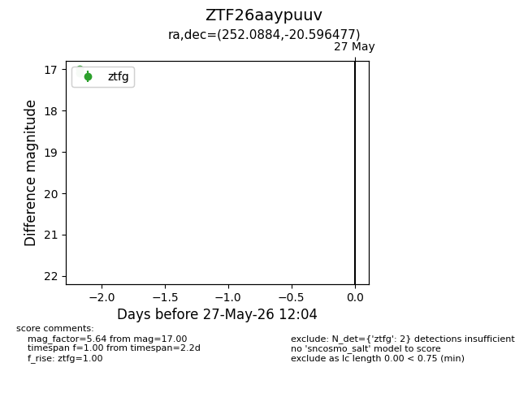
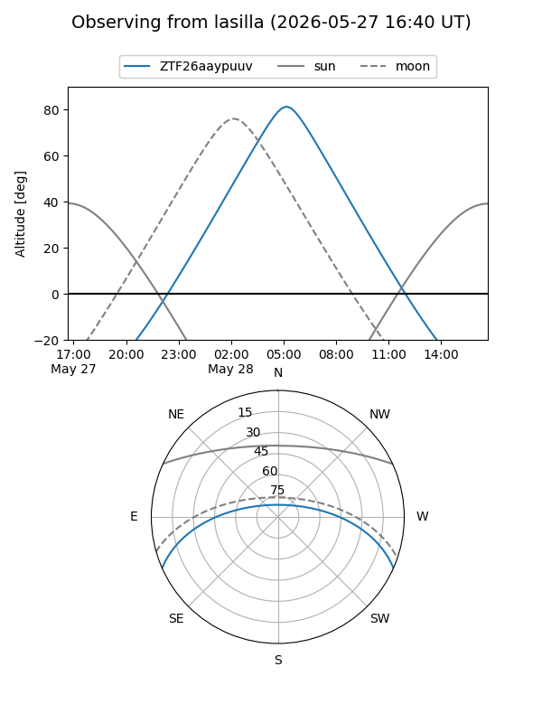
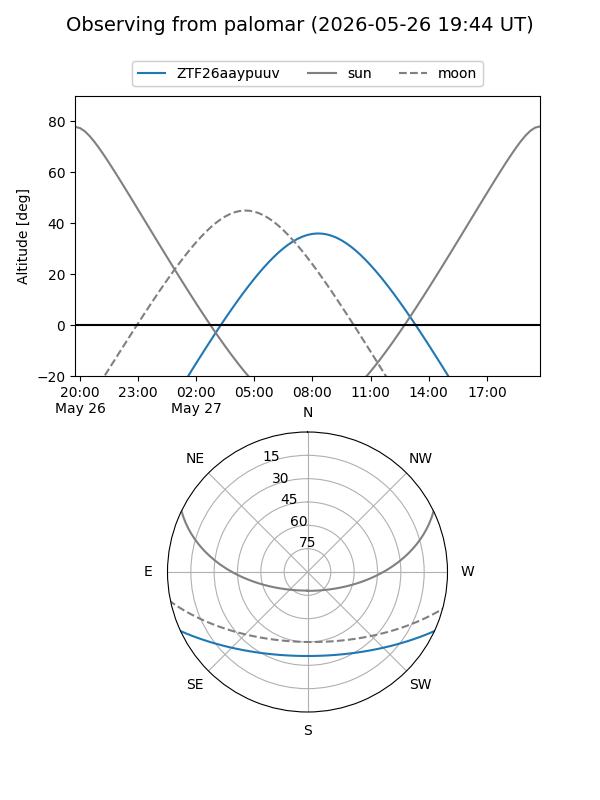

ZTF26aaypuuv
Target ZTF26aaypuuv at 2026-05-27 12:10
Aliases and brokers:
lsst-FINK: link
lsst-Lasair: link
lsst-ALeRCE: link
ztf-FINK: link
ztf-Lasair: link
ztf-ALeRCE: link
alt names
ZTF26aaypuuv (ztf,fink_ztf)
Coordinates:
equatorial (ra, dec) = 252.0884,-20.59648
equatorial (HMS+DMS) = 16:48:21.22,-20:35:47.32
galactic (l, b) = (359.4763,+15.41535)
Flags:
Photometry:
last ztfg=17.00
2 ztfg detections
Lightcurve

Visibility


Additional plots